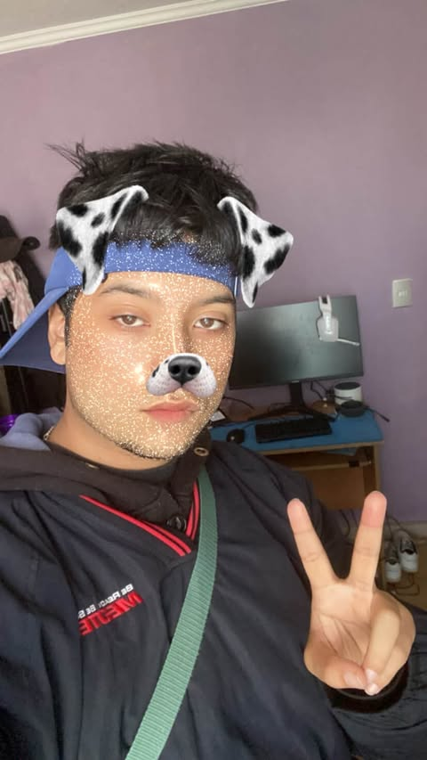
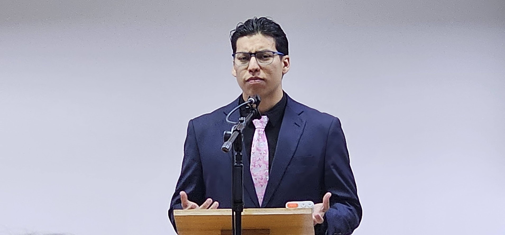

Apasionados por la informática, construyendo el futuro, línea a línea.

Mi pasión radica en la lógica del lado del servidor y la gestión de bases de datos. Disfruto optimizando el rendimiento y asegurando la robustez de las aplicaciones.

Soy un entusiasta de la programación con un interés particular en crear interfaces de usuario interactivas con HTML. Me encanta resolver problemas complejos y aprender nuevas tecnologías.
Me fascinan los datos y cómo pueden contar historias. Mi objetivo es extraer información valiosa para tomar decisiones inteligentes y construir modelos predictivos.